Opened from a Star candidate row (Testing → Star testing → event → candidate). The date the family signed must show with the signature — also after the drawing is deleted 90 days after testing (v0.635, as Color Belt, Black Belt and Prospects do). Two ways to show it; each drawn at PC, phone and 320, for a signature on file (Noah Chen) and a removed one (Morgan Hale). Amber = the row today; green = what changes. Tablet is left out: there the detail is the same centred dialog as on PC and looks the same.
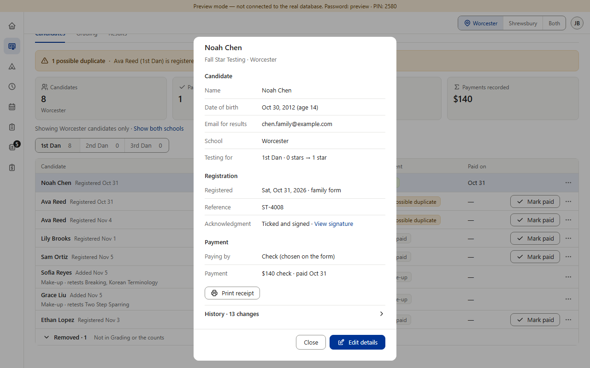
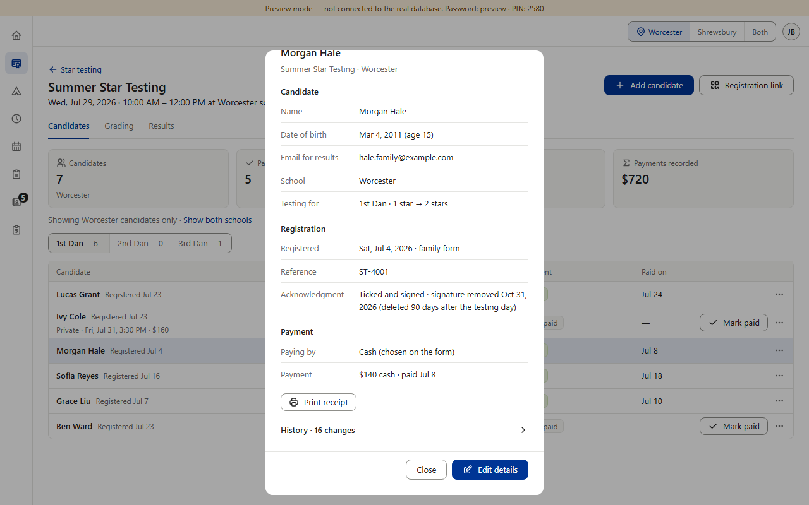
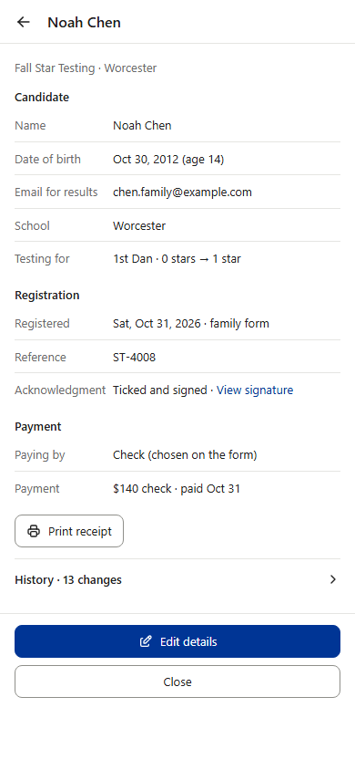
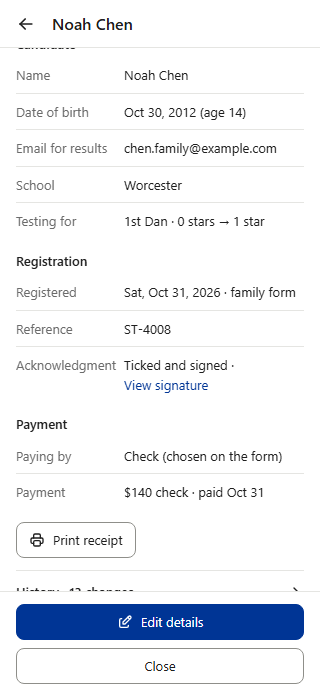
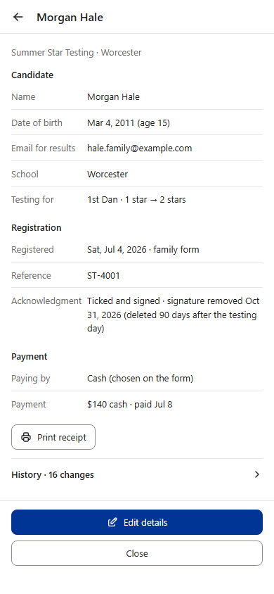
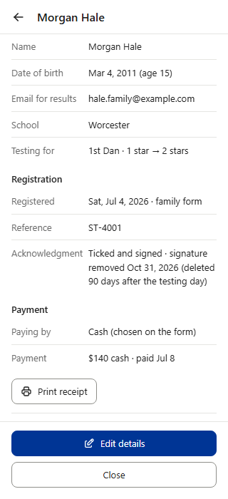
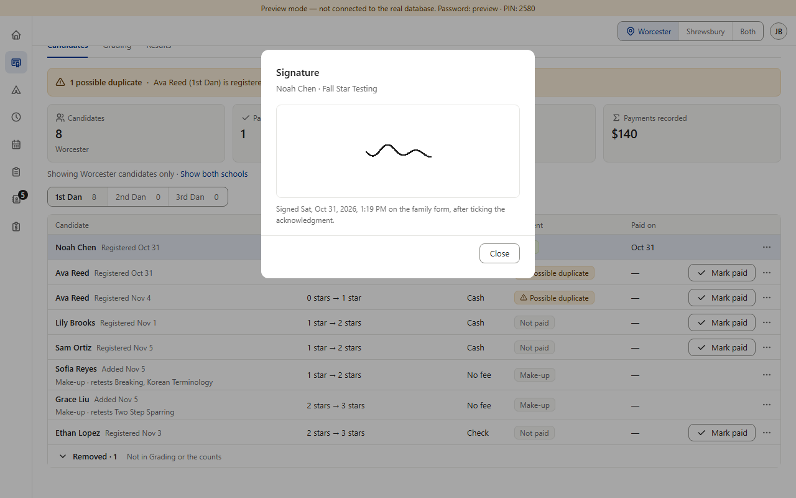
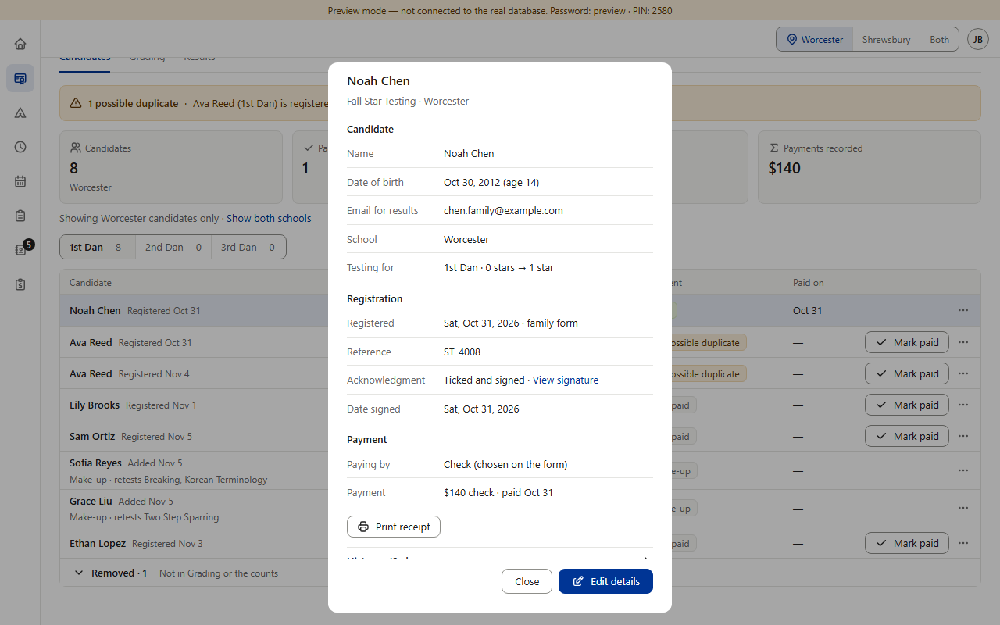
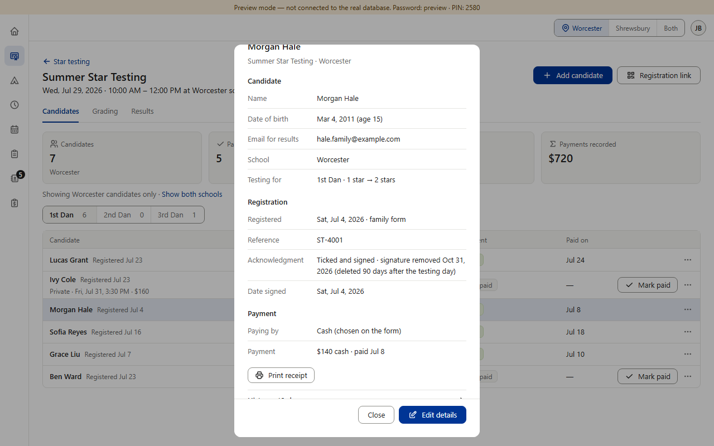
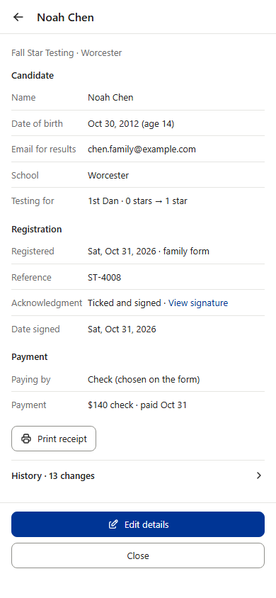
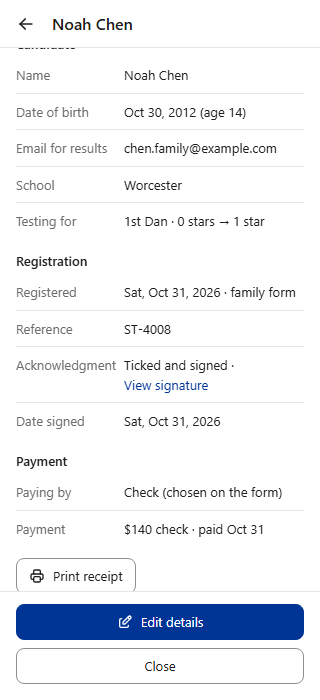
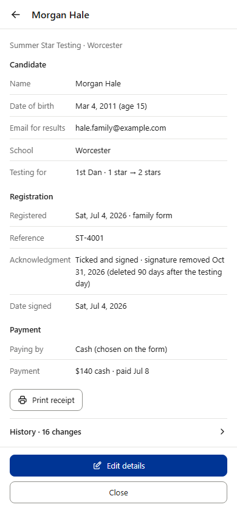
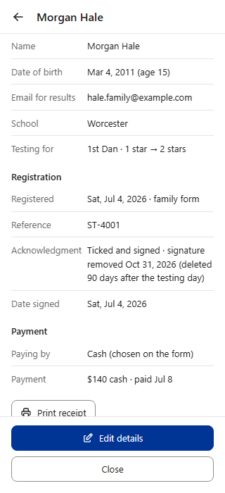
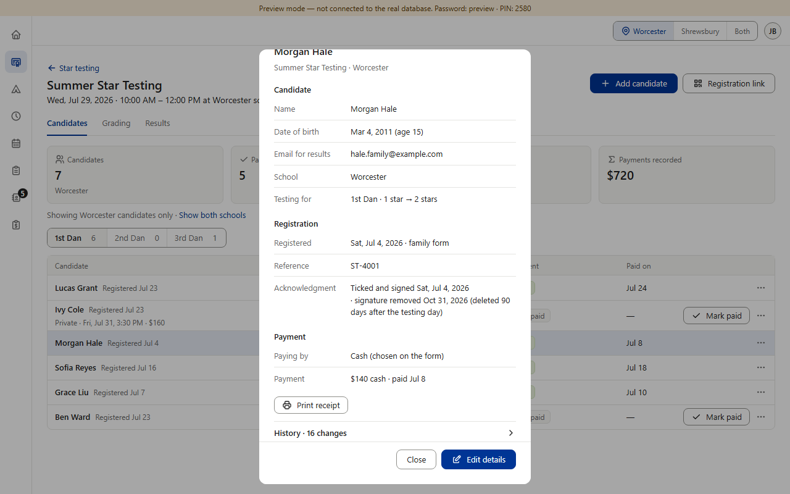
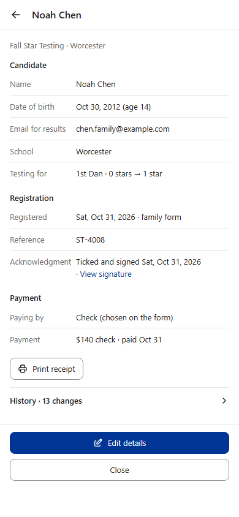
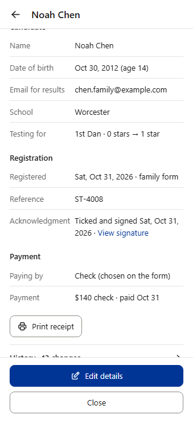
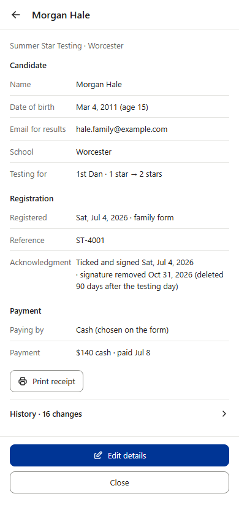
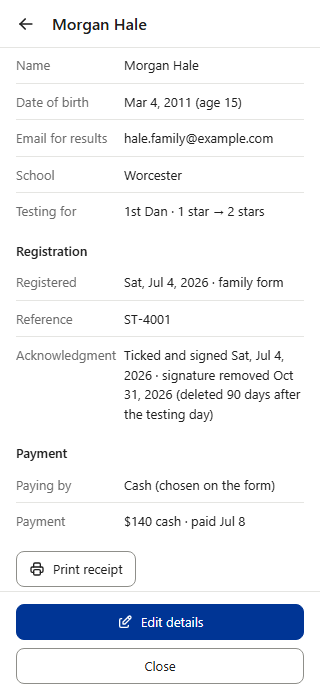